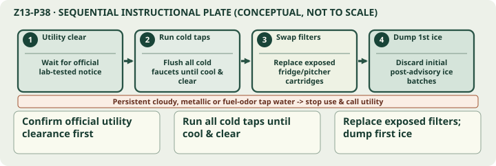

Z13-P38 · Home survival and utilities · New manuscript
Flush household plumbing properly after municipal water advisories clear
Clear stagnant, turbid, or hyper-chlorinated water from interior home pipes safely once authorities lift an outage or advisory.
When it applies · Homes returning to normal municipal tap water after main repairs, depressurization, or lifted Boil Water notices.
Equipment · Utility clearance notice, access to cold-water taps, faucet aerator tool if clogged, and replacement appliance filters.

Actions
- Wait for official public confirmation from your water utility that laboratory tests passed and the advisory is officially lifted before beginning home flushing.[D12, W07]
- Follow your utility's exact flushing sequence—typically running ALL cold-water faucets (removing aerator screens if sediment clogs them) for several minutes until water runs clear and cool, flushing toilets, cycling water softeners/hot-water tanks if directed, and discarding the first several batches of new ice.[D12]
- Replace contaminated refrigerator or point-of-use filter cartridges per manufacturer and health-department directions rather than reusing cartridges exposed to Boil Water or chemical-advisory water.[D12, W21]
Failure recognition · Drinking the first cloudy rusty glass straight from a stagnant bathroom tap the minute municipal pressure returns.[D12]
Verify · Confirm official utility clearance received, cold taps flushed clear, clogged aerators rinsed, and first ice batches discarded.[D12, ED]
Stop or change course · Persistent cloudiness, chemical/fuel odor, or metallic discoloration after flushing requires stopping consumption and contacting the water utility immediately.[D12, W01]
Evidence and editorial notes
- D12 · CDC · Drinking Water Advisories: An Overview (current web edition)
- Section: Water-System Interruptions and Advisory Compliance · Conditions: Municipal main breaks, depressurization, chemical spills, or treatment-plant outages
Support: Follow the exact active utility advisory tier (Boil Water, Do Not Drink, or Do Not Use), shut off automatic icemakers/appliances during advisories, flush household pipes strictly per utility clearance instructions after restoration, and rely on stored or agency-distributed potable water during outages.
Limitations: Boiling water during a chemical-spill Do Not Drink/Do Not Use notice can volatilize or concentrate contaminants. · Conflicting evidence: None; integrates W07 into Z15 infrastructure-disruption scenarios.
Editorial note: Anchors municipal water-outage compliance and safe flushing. · Specialist reviewer: Drinking-water utility and public health
Primary source · checked 2026-11-24 - W01 · CDC · How to Make Water Safe in an Emergency (2024-09-19)
- Section: Water with fuel or toxic chemicals in it · Conditions: Suspected fuel, toxic chemicals or radioactive contamination
Support: Use a different safe supply. Standard boiling and microbial disinfection do not make this water safe.
Limitations: Does not list contaminant-specific lab remediation; applies to emergency consumer decisions only. · Conflicting evidence: None across CDC/EPA emergency guidance.
Editorial note: Used as upstream hard-stop gate prior to any field treatment card. · Specialist reviewer: Drinking-water safety and public health
Primary source · checked 2026-11-24 - W07 · CDC · Drinking Water Advisories: An Overview (current web edition)
- Section: Boil water; Do not drink; Do not use · Conditions: Public-water system advisories
Support: The notice determines safe activities. Use another source for do-not-drink notices. Do not use tap water for any purpose under a do-not-use notice unless authorities direct otherwise.
Limitations: Local utility directives supersede general field summaries. · Conflicting evidence: None; exact advisory category is authoritative.
Editorial note: Distinguishes boil-water, do-not-drink, and do-not-use actions explicitly. · Specialist reviewer: Drinking-water utility and public health
Primary source · checked 2026-11-24 - W21 · CDC · Choosing Home Water Filters and Other Water Treatment Systems (current web edition)
- Section: Choosing Home Water Filters and Other Water Treatment Systems · Conditions: Selecting point-of-use filters by contaminant class
Support: Filter media differ sharply: carbon targets selected chemicals/taste, pore filtration targets cysts/bacteria, and reverse osmosis/distillation target broader dissolved solids; check independent certification (NSF/ANSI).
Limitations: No single uncertified improvised filter handles all microbial and chemical hazards. · Conflicting evidence: Counters marketing claims of universal survival filters.
Editorial note: Frames equipment selection around verified contaminant classes and certifications. · Specialist reviewer: Drinking-water treatment specialist
Primary source · checked 2026-11-24
Source lineage · CDC Drinking Water Advisories; new manuscript · Classification · New manuscript.